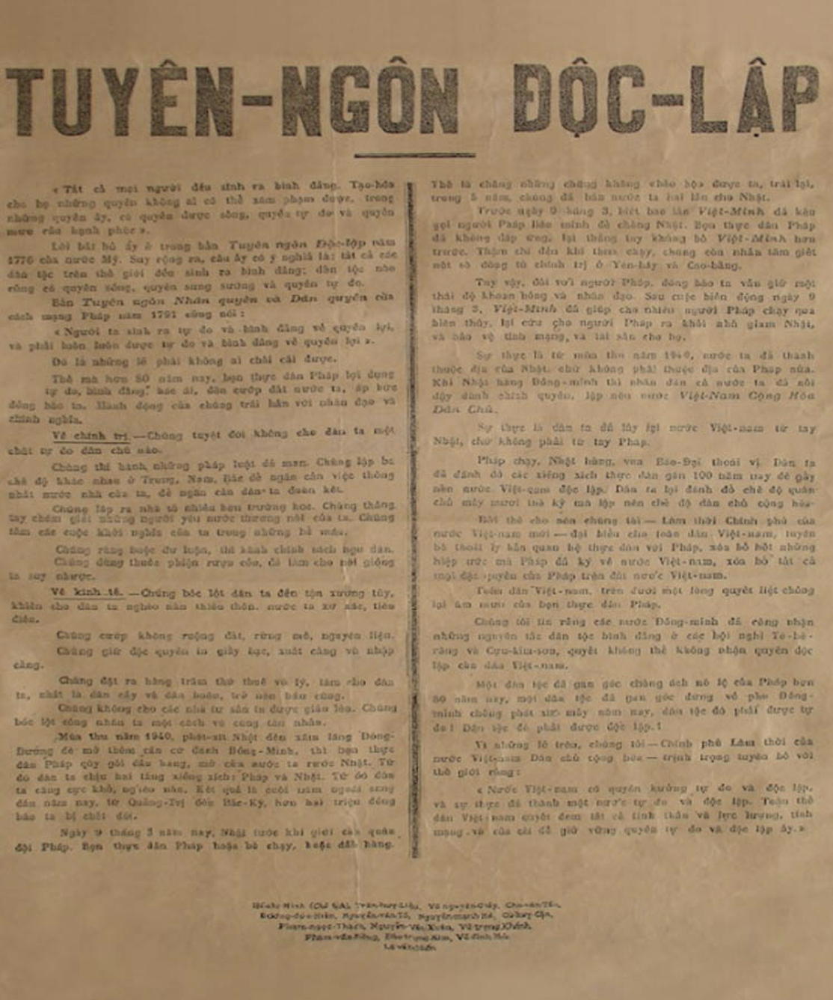
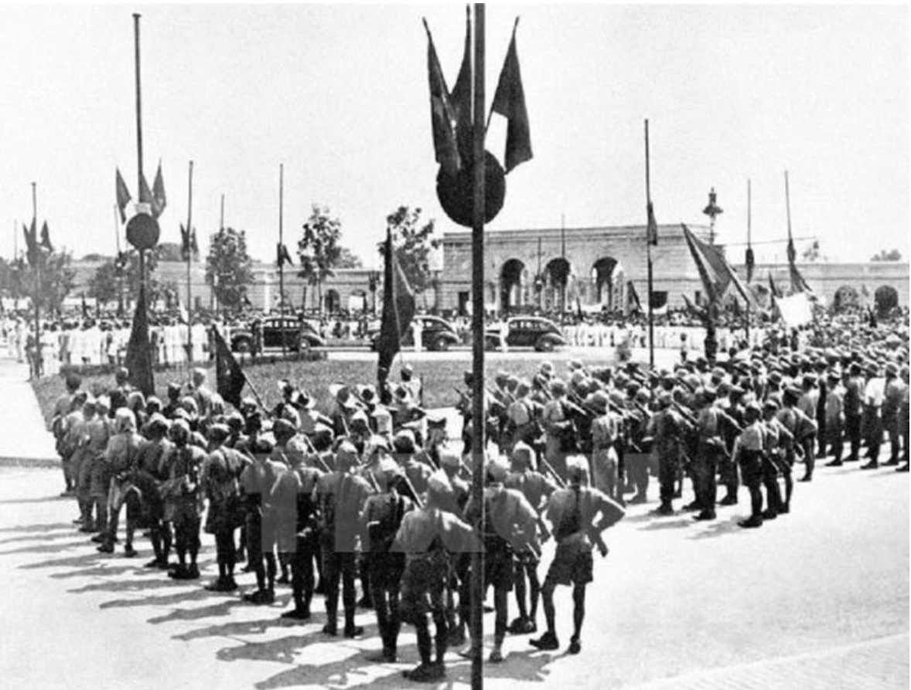

TUYÊN NGÔN ĐỘC LẬP
Văn kiện lịch sử khai sinh ra Nước Việt Nam Dân chủ Cộng hòa, đọc tại Quảng trường Ba Đình ngày 2 tháng 9 năm 1945.
1. Hoàn cảnh ra đời
Bản Tuyên ngôn Độc lập được Chủ tịch Hồ Chí Minh hoàn thiện tại căn nhà số 48 Hàng Ngang, Hà Nội, ngay sau khi Cách mạng Tháng Tám thành công. Tuyên ngôn không chỉ tuyên bố chấm dứt chế độ thực dân, mà còn đặt nền móng pháp lý và tư tưởng cho Nhà nước Việt Nam mới.
Đoàn xe chở Chủ tịch Hồ Chí Minh và các đại biểu Chính phủ lâm thời của nước Việt Nam Dân chủ Cộng hòa vào vườn hoa Ba Đình, nơi cử hành lễ "Ngày độc lập".
Đây là sự kết tinh của lịch sử đấu tranh dân tộc, vừa mang tính chất một văn bản pháp lý, vừa là một bản hùng ca khẳng định quyền tự quyết của nhân dân Việt Nam trước toàn thế giới.
2. Toàn văn Tuyên ngôn Độc lập (Trích đoạn)
“Tất cả mọi người đều sinh ra có quyền bình đẳng. Tạo hoá cho họ những quyền không ai có thể xâm phạm được; trong những quyền ấy, có quyền được sống, quyền tự do và quyền mưu cầu hạnh phúc.”
Chủ tịch Hồ Chí Minh (Trích đoạn mở đầu)
Hỡi đồng bào cả nước!
...Pháp chạy, Nhật hàng, vua Bảo Đại thoái vị. Dân ta đã đánh đổ các xiềng xích thực dân gần một trăm năm nay để gây dựng nên nước Việt Nam độc lập. Dân ta lại đánh đổ chế độ quân chủ mấy mươi thế kỷ mà lập nên chế độ dân chủ cộng hoà.
Bởi thế cho nên, chúng tôi, Lâm thời Chính phủ của nước Việt Nam mới, đại biểu cho toàn dân Việt Nam, tuyên bố thoát ly hẳn quan hệ với Pháp, xóa bỏ hết những hiệp ước mà Pháp đã ký về nước Việt Nam, xóa bỏ tất cả mọi đặc quyền của Pháp trên đất nước Việt Nam.
...Nước Việt Nam có quyền hưởng tự do và độc lập, và sự thực đã thành một nước tự do, độc lập. Toàn thể dân tộc Việt Nam quyết đem tất cả tinh thần và lực lượng, tính mạng và của cải để giữ vững quyền tự do, độc lập ấy.
3. Ý nghĩa lịch sử
Tuyên ngôn Độc lập là một văn kiện lịch sử có giá trị tư tưởng và ý nghĩa thực tiễn rất sâu sắc. Đây là sự phát triển đến đỉnh cao của tư tưởng độc lập, tự do đã được thể hiện trong bản “yêu sách” gửi Hội nghị Versailles, trong Đường kách mệnh, trong Chánh cương vắn tắt, trong Luận cương chính trị, trong các văn kiện khác của Đảng cũng như của Mặt trận Việt Minh.
Bản Tuyên ngôn Độc lập là sự kế thừa và phát triển những bản tuyên ngôn trong lịch sử dân tộc là Nam quốc sơn hà, Bình Ngô đại cáo.
Tuyên ngôn Độc lập là kết tinh những quyền lợi cơ bản và những nguyện vọng thiết tha nhất của nhân dân Việt Nam, là biểu hiện hùng hồn khí phách, bản lĩnh kiên cường, ý chí bất khuất của dân tộc ta.